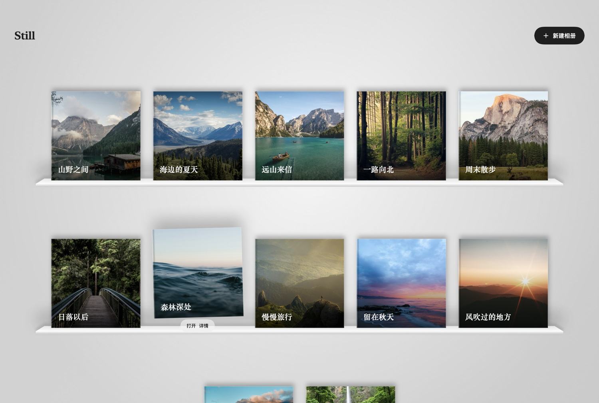
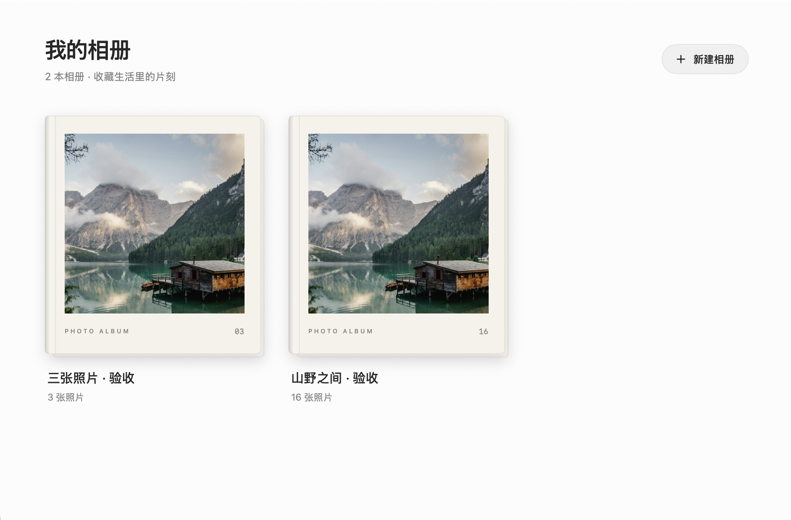
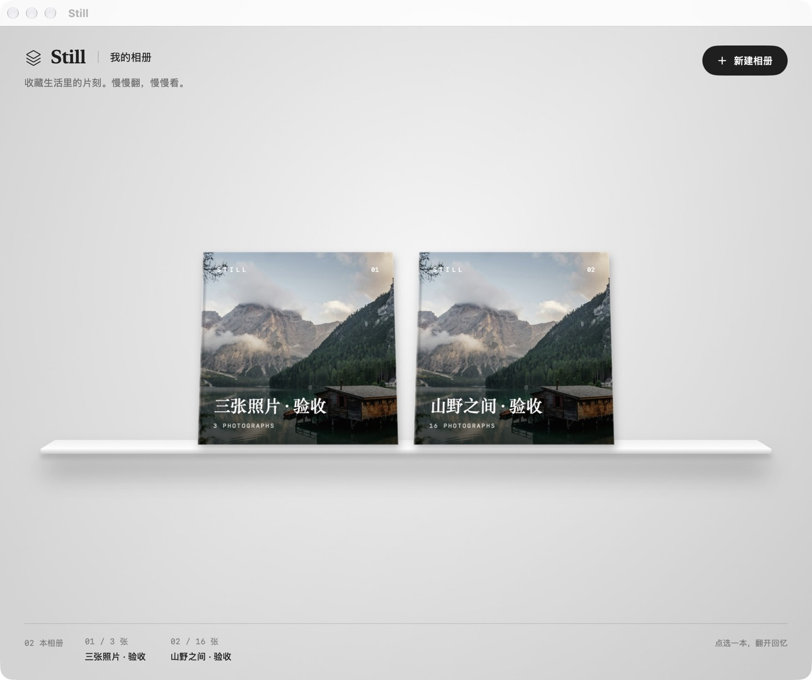
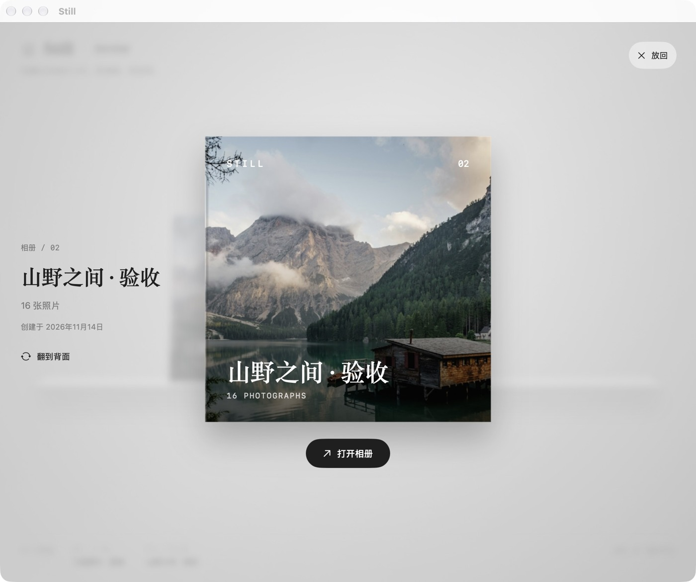
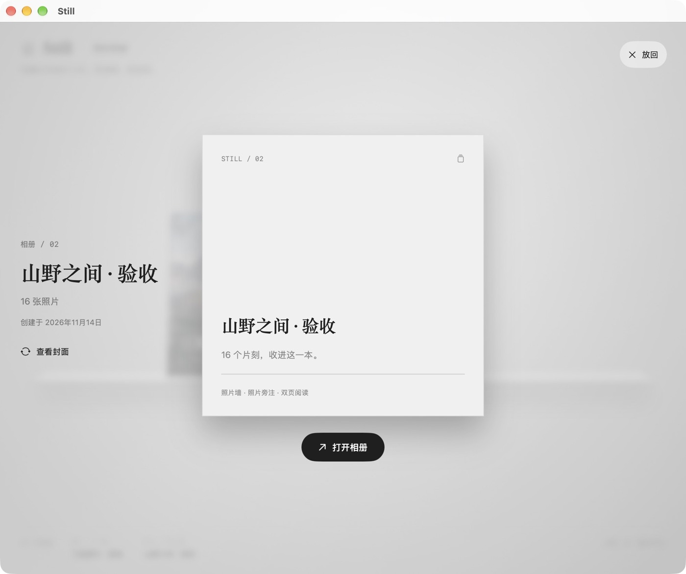
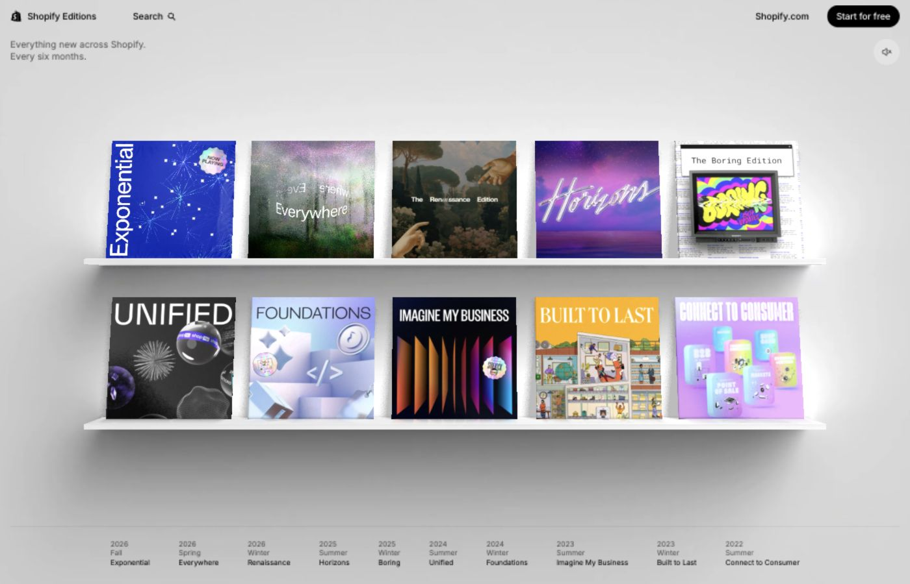
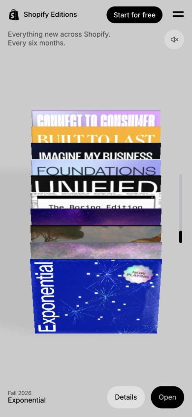

Still，新的相册架
Mac 原生页面。浅灰墙面、实体搁板、照片封套；点选后抽出、翻面、打开相册。
构建通过6 项测试通过独立开发版资料库
更新：封面只显示名字，移除底部索引
12 本示例相册，每行 5 本，当前窗口显示前 10 本，其余 2 本向下滚动查看。独立内存资料库，未修改用户相册。此图为原生视图导出。

上一轮：改前与改后

改前 · 用户提供的目录截图
改后 · 最终原生窗口截图上一轮详情截图
最新版本已移除“相册 / 编号”和翻面功能。下方保留此前动效验收截图。

封套移到中央，背景虚化，可打开相册或放回。
空格或按钮翻面，Escape 放回。参考页逐帧查看
滑动查看 32 张实际采样。约 700 ms 完成抽出，先移动与放大，随后背景虚化和说明浮现。采样时间含工具开销。
原生点击关键帧
原生工具第一帧约在点击后 422 ms；这里只展示实际捕获的后半段和稳定状态。
宽窄屏参考

Shopify 宽屏使用实体唱片架，中等宽度仍保留此布局。
390 px 窄屏改为纵向堆叠。当前项目无手机端，本次只实现 Mac。验收说明
已验证详情、翻面、放回、照片墙、双页阅读与返回目录。原生 hover 连续移入／移出采样受工具限制，未做完整录屏；材质与弹性采用 SwiftUI 近似。完整检查范围见 验收记录。